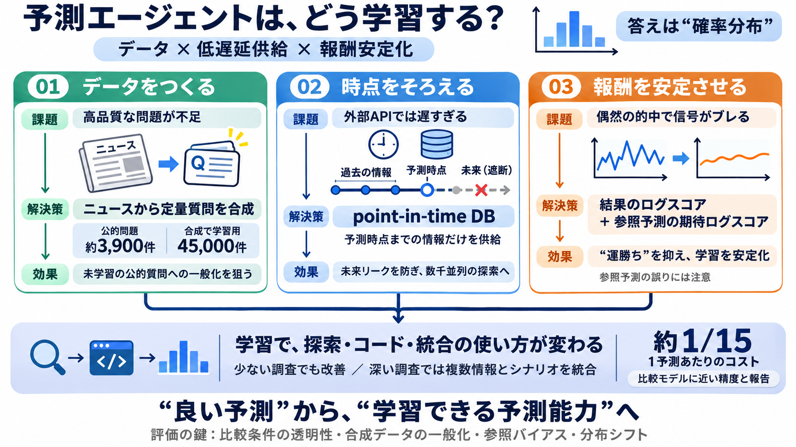

Training a Scalable Forecasting Agent (Guest Post with Mantic) - Thinking Machines Lab
Our post-trained version of Inkling 2 Small extends the cost-accuracy frontier for forecasting, matching Fable 5.2 (medi…

Our post-trained version of Inkling 2 Small extends the cost-accuracy frontier for forecasting, matching Fable 5.2 (medi…
A separate launch demonstration goes beyond writing software. Thinking Machines gave Inkling 2 Small a task built by Pro…
Thinking Machines raised a $2 billion seed at a $12 billion valuation that July, the largest seed round on record at the…
# Mantic ID: dXmJqxh1F9O0 Website: www.mantic.com Legal name: Mantic Technologies LTD. Headquarters: London, England, Un…
# 予測市場とは何か？高精度な予測を活用して未来を取引する facebooktwitterlinkedin すべてのコメントを見る（0） 予測市場は、投機と機関投資家の予測の境界を曖昧にし、2026年上半期に650億ドル超の取…